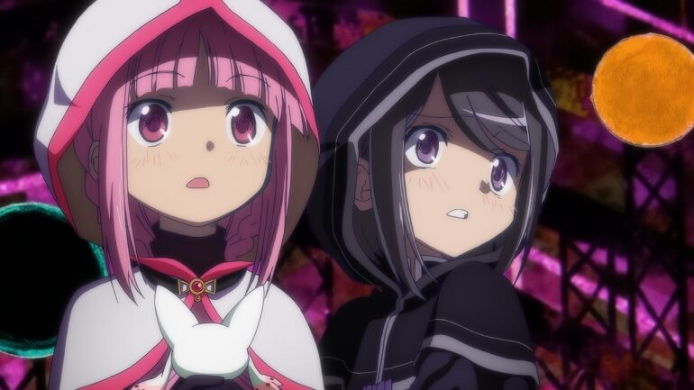
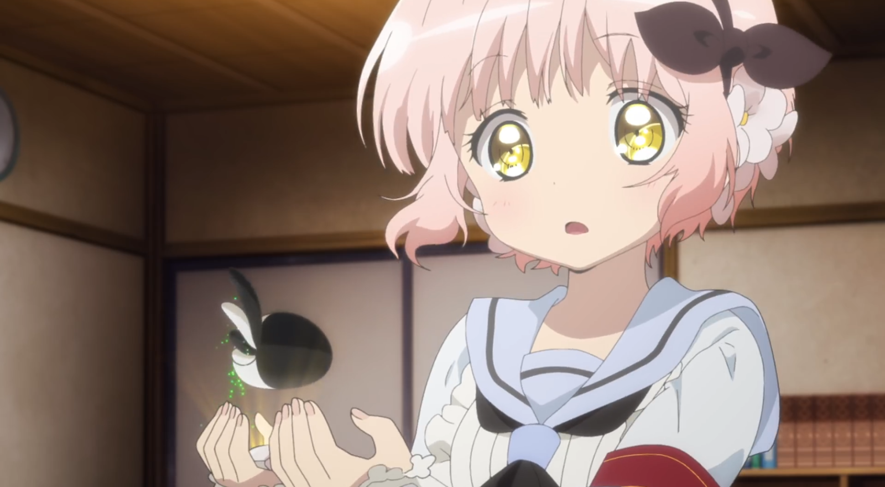
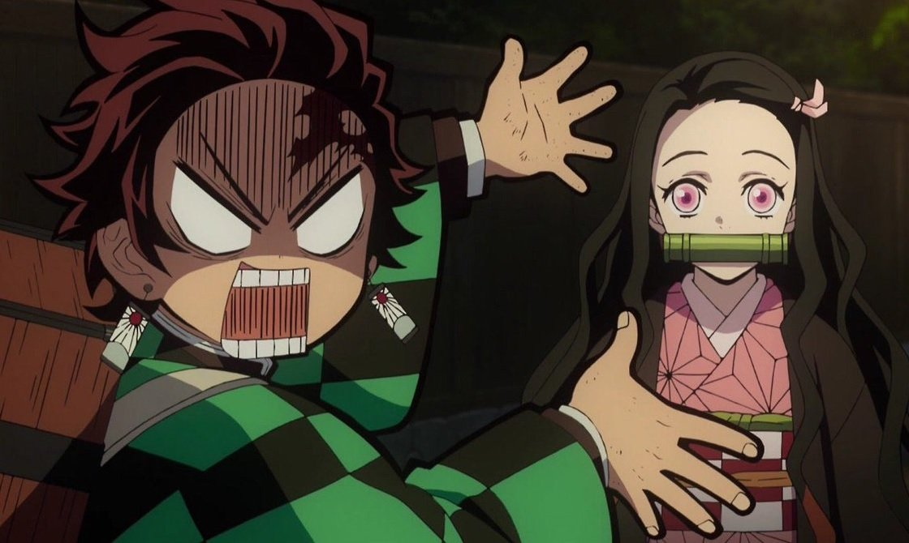
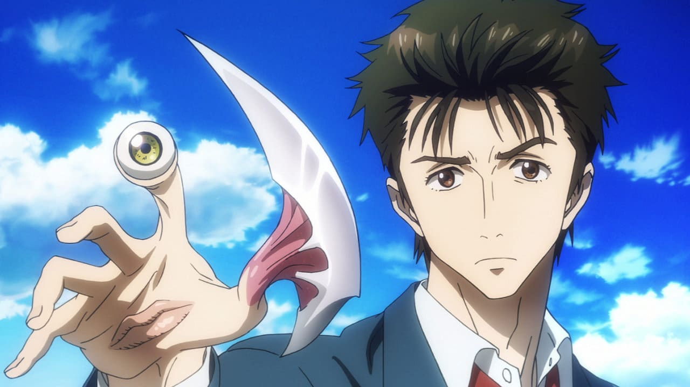
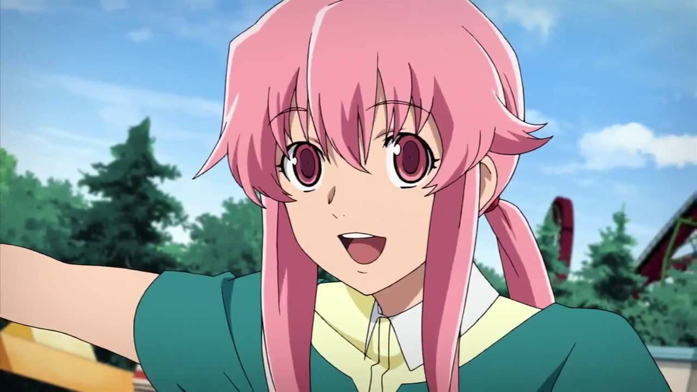

Voltar
Fóruns

Postado por "Mariana"
Anime chato, a história não anda, a protagonista procura sua irmã, depois de um tempo a gente até esquece disso pois, esse anime não consegue focar em uma coisa só, parece uma mistura sem noção. Sem contar que o Kyubey foi extremamente ofuscado.
Odeio quando eu to assistindo esse anime e me acordam.

Deveriam retirar o "Madoka Magica side story" do nome, pois é uma ofensa a Madoka Magica

Não acho que o anime seja tão tão ruim assim, só acho que colocamos demais as expectativas de Madoka em cima, e de fato, esse anime não é Madoka!

A PROTAGONISTA TOMANDO UMA SURRA NO PRIMEIRO EPISÓDIO KKKK

Postado por "Gustavo"
Início do anime: Ok, ela é fofinha e gosta de ajudar os outros. Ao ser roubada pela Ruller:chora. Pós-morte da La Pucelle: Okay, então ela vai vingar sua amiga, realidade: ela chora e se escora na Alice. Chata, preguiçosa e insuportável. A Ripple deveria ser a protagonista.

Concordo, principalmente com a Ripple ser a protagonista, muito mais carismática, interessante e com uma história boa.
Nossa nem me fala nessa preguiça dela, achei que nos episódios finais isso ia mudar... Decepção...
Só não é pior que a Nemurin.. Ao menos a Nemurin serviu para iniciar o jogo.
Alice sofreu mais que a Juliette
Postado por "Tanjiro"
se a Nezuko tem 1 milhão de fãs, eu sou um deles se a Nezuko tem 5 fãs, eu sou um deles se a Nezuko tem 1 fã, eu sou esse fã se a Nezuko não tem fãs, eu não estou na terra se o mundo é contra a Nezuko, eu sou contra o mundo todo
NEZUKO SUPREMACY!
CARREGOU O ANIME NAS COSTAS! NEZUKO LENDÁRIA
Nezuko é literalmente um demônio e é linda.. Assim como o Muzan rsrsrs.
Postado por "Anônimo"
Só de imaginar os poderes que eu conseguiria com um "Migi"..
...
Você sabe que eles tomam total controle das pessoas e só 2 dentre muitos parasitas conseguem conviver junto com os humanos, né?
Realidade: se eles existissem, seríamos todos mortos.
Postado por "Hian"
Ciumenta, surtada, yandere e ainda por cima e-girl. Quem diria que a Yuno Gasai criaria uma legião no futuro.
Amaldiçoada seja!
Tenho dó (e inveja) do Yuki.
As "Yuno" da vida real n tem coragem de matar nem uma barata, mas pagam de "surtada" nas redes sociais kkkkkkkk
Todos os direitos reservados.